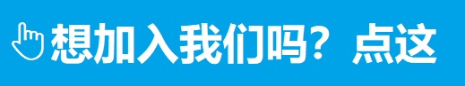

能不能好好说话！！！
| 主创&站长：Steve | 开发小组名单：Steve，宋昕霓，沐思遥，黄欣灵 | GitHub仓库地址：👉戳这👈 |  |
 |
awsl和yyds是什么？
awsl是一个网络流行词，是“啊我死了”（à wǒ sǐ le）的拼音首字母缩写，一般用来形容对看到可爱之物时的激动心情，在2018年因为虚拟主播白上吹雪爆红。“awsl”爆红后，被应用于各种令人感到开心的幸福的场合。 |
内卷是什么？内卷，网络流行语，原指一类文化模式达到了某种最终的形态以后，既没有办法稳定下来，也没有办法转变为新的形态，而只能不断地在内部变得更加复杂的现象。 经网络流传，很多高等学校学生用其来指代非理性的内部竞争或“被自愿”竞争。 现指同行间竞相付出更多努力以争夺有限资源，从而导致个体“收益努力比”下降的现象。可以看作是努力的“通货膨胀”。 |
 |
 |
996是什么？
996工作制是是早上9点上班、晚上9点下班，中午和傍晚休息1小时（或不到），
总计工作10小时以上，并且一周工作6天的工作制度。这一制度，代表着中国互联网企业盛行的加班文化。 |
杠精是什么？
杠精是一个网络流行语，指经常的通过抬杠获取快感的人、总是唱反调的人、争辩时故意持相反意见的人。
从日本同类词到中国原创与“杠精”一词含义比较接近的网络流行语“ky”，撷取自日语。 |
 |
| Copyright © 2014-2022 Steve Workshop. All Rights Rerserved. | |||
| 公安网备：不存在的！ | ICP证：也不存在的！ | 关于我们 | Steve Workshop 运营：无许可信息 |